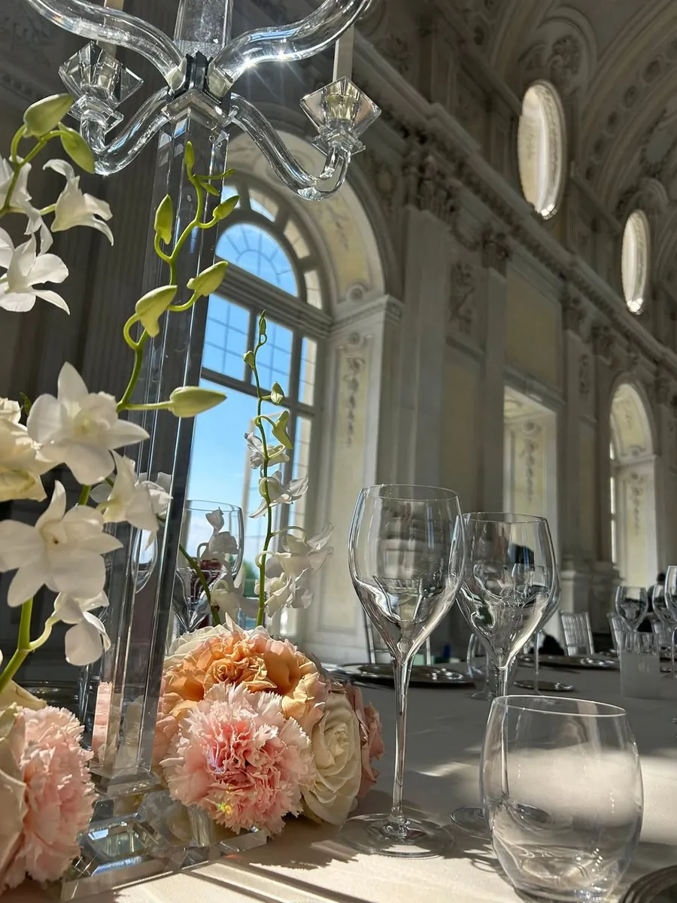
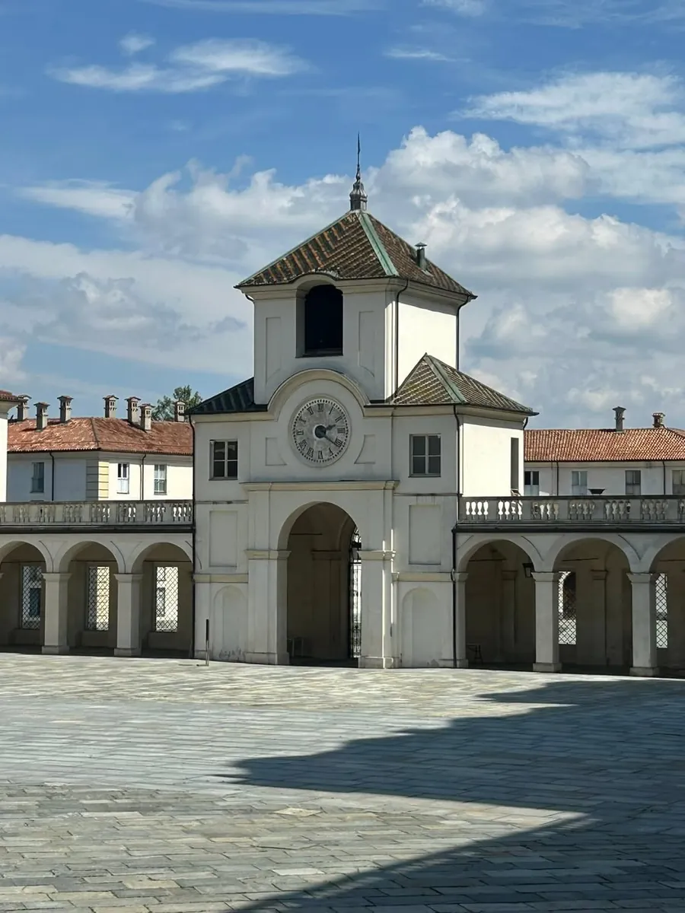
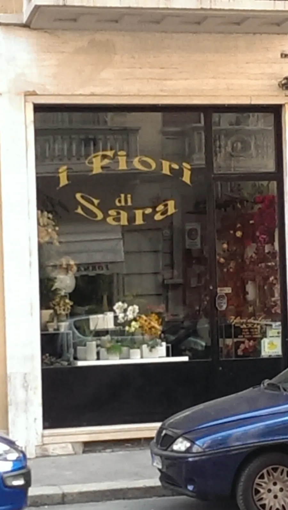

Fiori freschi in via Fréjus, e i fiori per il vostro matrimonio
Mazzi per un regalo o una laurea, composizioni per battesimi e cerimonie, bouquet e allestimenti per le nozze. Passate in negozio o chiamateci per raccontarci l'occasione.
5,0 su 44 recensioni Google.

Per quale occasione?
Tutto a tema, dal bouquet alla location
Vi aiutiamo nella scelta dall'inizio: il bouquet della sposa e delle damigelle, i bracciali, le bottoniere e l'allestimento della location, con i colori e lo stile che avete in mente.
Chiamate per un appuntamentoHa capito perfettamente i miei gusti facendo tutto a tema, bouquet mio e delle damigelle, bracciali, bottoniere e tutto il resto.
Il mazzo per la proclamazione
Un mazzo da portare alla proclamazione, nei colori che preferite. Chiamate o passate in negozio per ordinarlo.
Ordina il mazzoHo comprato un bellissimo mazzetto per la laurea di mia figlia. La titolare oltre ad avere buon gusto è anche gentilissima.
Battesimi e cerimonie
Composizioni e allestimenti per battesimi, eventi e cerimonie di famiglia, pensati insieme a voi.
Chiedete un preventivoConsiglio soprattutto per allestimenti di location per eventi, cerimonie ecc. Prezzi nella norma e tante buone idee.
Un fiore, un mazzo, un regalo
Fiori freschi confezionati al momento, per un compleanno, un grazie o senza un motivo. Entrate in negozio e sceglietelo con noi.
Come arrivareVivamente consigliato per acquistare un semplice pensiero, un regalo, allestire matrimoni, battesimi o semplicemente per comprare un fiore confezionato con amore.
Dalla nostra pagina: la Reggia di Venaria
Ad aprile abbiamo pubblicato queste foto dalla Reggia di Venaria: centrotavola di rose color pesca e fiori bianchi nelle sale della Reggia.
Le coppie che si sono affidate a noi ne parlano così:
Le composizioni erano una meraviglia, tutti gli ospiti e i membri dello staff ci hanno fatto i complimenti.
Grazie alla sua competenza abbiamo ottenuto il risultato che volevamo!



